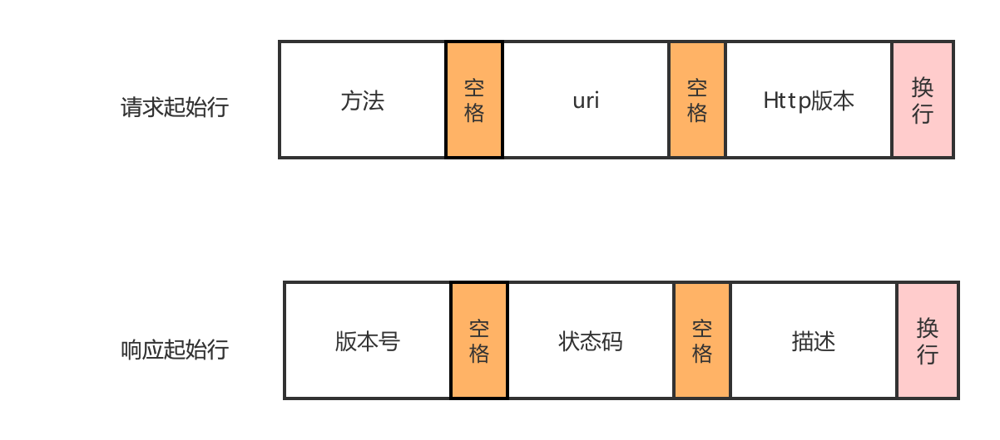
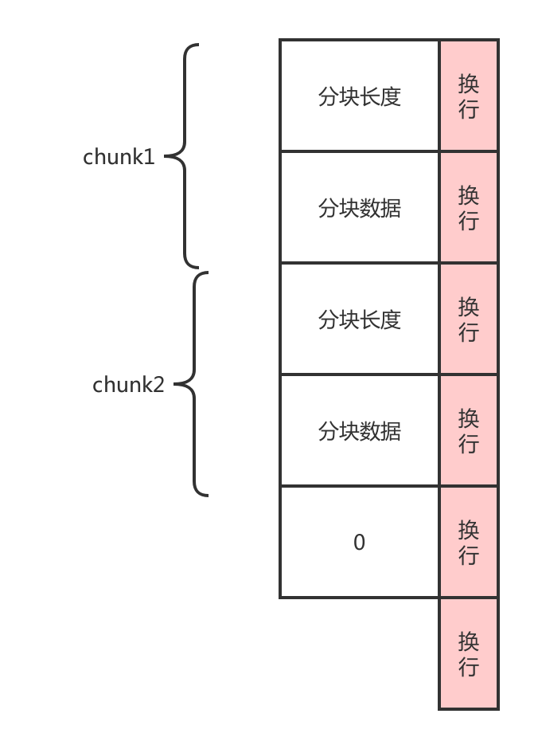

作为一个web开发者，每天都在使用者Http协议，却总是一知半解。本文参看Http RFC7230规范，梳理了http报文部分。
start-line: 起始行,描述请求或响应的基本信息
*( header-field CRLF ): 头
CRLF
[ message-body ]: 消息body，实际传输的数据
起始行的格式就是
start-line = request-line(请求起始行）/（响应起始行）status-line

这些格式就是规则，用来解析的
顺序
理论上头字段的key顺序是无所谓的，但是最佳实践是将控制字段放在前面，比如请求的时候Host,响应的Date，这样可以尽快发现是否需要处理。
重复
除了Set-Cookie这个key，其他都不行，如果发送方发了重复的key，接收方会将它合并，值是以逗号分隔。
字段限制
协议本身对每个头字段没有限制，但是在工程实践中的得出过一些实践，没有通用的限制，和字段具体的语义有关。整体的header大小限制没有定义标准值，有些4K，有些8K。server端检查到header头超过了限制值，处于安全考虑，不会忽略掉。而是会抛出4XX错误。
只有Host字段是请求头中必须带的,其他无所谓。
| 字段 | 请求头 | 响应头 | 解释 |
|---|---|---|---|
| Host | 1 | 0 | 告诉服务器应该由哪个主机处理 |
| User-Agent | 1 | 0 | 标识浏览器类型，虽然已经被用烂了，不太可信，但有时候可以用来自定义类型 |
| Accept | 1 | 0 | 可以接收的body类型 mime type,比如text/html |
| Accept-Charset | 1 | 0 | 可以接收的字符集 |
| Accept-Encoding | 1 | 0 | 可以接收的编码格式 |
| Accept-Language | 1 | 0 | 可以接收的多语言 |
| Content-Type | 1 | 1 | 发送的body类型mime type |
| Content-Encoding | 1 | 1 | 发送的编码 |
| Content-Language | 1 | 1 | 发送的语言 |
这边有完整的分类
https://developer.mozilla.org/en-US/docs/Web/HTTP/Headers
header是必须有要有的，但是body就不一定要用。
body就是传输的内容。因为Http是应用层协议，所以除了传输数据，还需要定义传输的数据格式。这些格式定义在header中指定。Content-Length请求或者响应的body长度，必须要带上这个字段，以便对方可以方便的分辨出报文的边界，也就是Body数据何时结束。如果Body太大，需要边计算边传输，不到最后计算结束是无法知道整个Body大小的，这个时候可以使用chunk传输，通过Transfer-Encoding指定，这两个header key是互斥的，只能指定一个，如果指定了两个，接收端优先处理Transfer-Encoding字段。通常body的数据比较多时，都使用chunk来传输，效率比较高。没有了length，怎么知道数据传输结束了，通过一个长度为 0的chunk，对应的分块数据没有内容，来表示body内容结束。

jetty 是web容器，需要解析Http Request,发送Http Response。具体干了什么下回分析
关注公众号【方丈的寺院】，第一时间收到文章的更新，与方丈一起开始技术修行之路
https://tools.ietf.org/pdf/rfc7230.pdf
https://developer.mozilla.org/en-US/docs/Web/HTTP/Headers